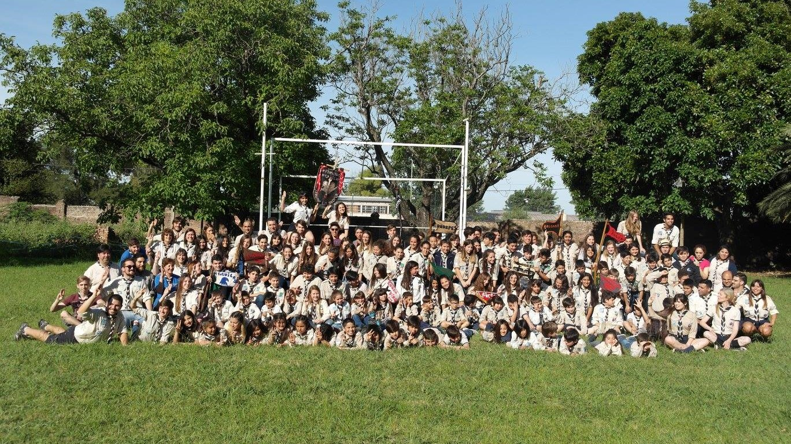
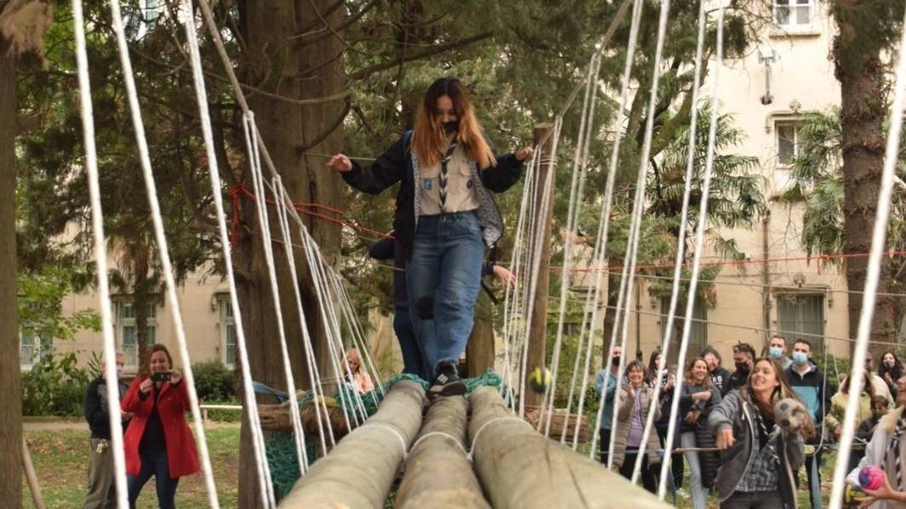

En la manada de lobos agiles aprendemos jugando, nuestro principal marco basado en el libro de la selva nos ayuda a descubrir un mundo de fansasia donnde los protagonistas son cada uno de los chicos
Con el juego, la diversion, y el respeto mutuo como estandarte exploramos la aventura de hacer nuevos amigos

En piche se aprende mediante el sistema de patrulla como es trabajar en un equipo de amigos con la libertad de descubrir y explorar y encontrar su propio espacio donde se desarrollen sanamente
En Yaguarundí fomentamos los valores propuestos por nuestro fundador Baden Powell, enseñandoles, a ser la mejor version de ellos mismos, ayudando a su crecimiento personal y espiritual sobre todas las cosas

Un mar blanco de negros trabajando NDEA

Ski-bi dibby dib yo da dub dub Yo da dub dub Ski-bi dibby dib yo da dub dub Yo da dub dub Ski-bi dibby dib yo da dub dub Yo da dub dub Ski-bi dibby dib yo da dub dub Yo da dub dub (I'M THE SCATMAN)